<div class="background">
  <div class="page">
    <div class="intro">
      <h2><u>HOW DOES HEIGHT AFFECT PLAYER'S STATS?</u></h2>
      <P>
        You don't need to be a data scientist to know that height is an important aspect of basketball.  
         Basketball is a vertical game and the closer to the basket you are the easier the game becomes.  
         On the flip side however, bigger people tend to be slower and less coordinated and speed and 
         coordination are another two important skills to have.  So how does an NBA players height 
         generally effect their statistical output?  We can compare a player's height to any number of 
         other stats to see if there are coorilations between how tall they are and the numbers they 
         put up.
      </P>
      <p>
        This page will contain all the code writen to obtain our data.  We will only skip over repeated 
        tasks like creating similar charts for various statistical catagories.  The first several lines 
        of code will all have already come up earlier on this site.
      </p>
    </div>

    <div class="code">
      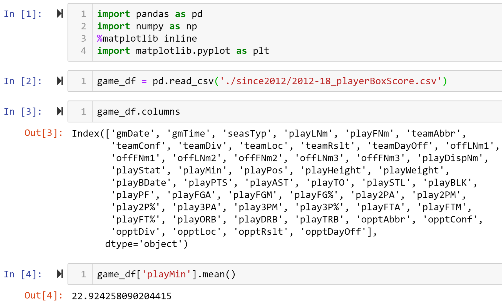
      <p>
        Cells one through four, <span>shown above</span>, get us set up to do our analysis.  Cell-1 
        imports the python libraries that we need, cell-2 reads our data file so we have access to our 
        CSV file in Jupyter Notebook.  In cell-3 we take a look at all of our dataframes columns so we 
        know what how our information is organized, and how it can then be sorted.  Cell-4 is really the 
        beginning of our analysis, it displays the average number of minute played per game for every 
        play in every game for all six NBA seasons in our dataframe.<br><br>
      </p>
      
      <p>
        We found out in cell-4 that the average number of mins per player per game was a little under 23 
        MPG.  In cell-5 we then remove any row in which the player played less than 20 minutes in a game.  
        We don't want to only keep games above the mean, but we do want to get rid of row of players that 
        hardly played as they will throw off our statistical averages.  If a player played at least 20 of 
        48 minutes in a game they had a fair chance to make their contribution.
      </p>
      <p>
        In cell-6 we create a new dataframe that only has a single row for each individual player, and all 
        of their stats are averaged instead of having exact statistics for every single game in six years. 
        We will come back to avgs_df shortly.
      </p>
      <p>
        In cell-7, we once again create a new data frame that only includes player's boxscores from games 
        that they won.  Then we print the first few rows to confirm that the value of the teamRslt column 
        in every row is 'Win'.  
      </p>
      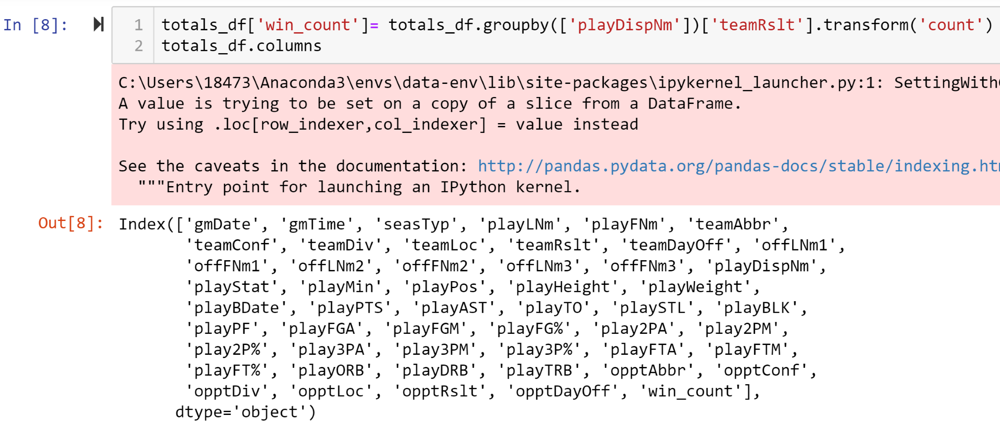
      <p>
        In cell-8 we are adding a new column to the totals_df data frame.  This column will contain the total 
        number of team wins that each player has. Since we removed all Loses from the data frame we can simply 
        count the number of values in the teamRslt column and that is equal to the number of wins that player 
        was a part of.  <span>Note that the warning above is telling us that we are adding a column to a 
        portion of a full dataframe, but we only want to work with a part of the full data frame that we 
        originally started with</span>.
      </p>
      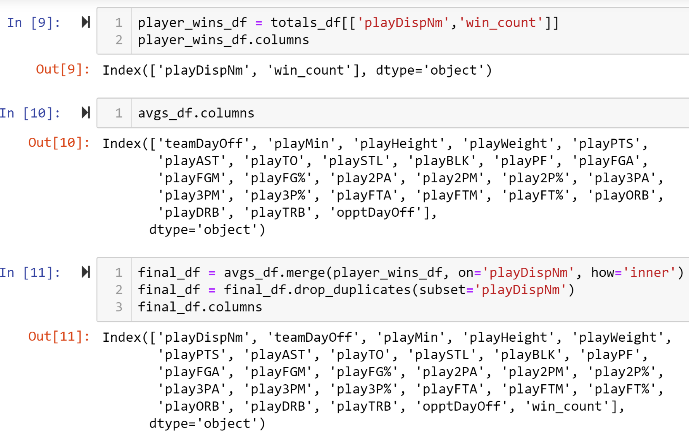
      <p>
        In cell-9 we reduce totals_df down to only two columns, <span>plus the index</span>, into another data 
        frame named player_wins_df.  Cell-10 serves only as a remimder what columns currently exist in avgs._df.  
        Then in cell-11,the data frames avgs_df and players_win_df are joined together by the shared column 
        playDispNm.  Now we have each players height, and the number of wins they've been a part of together in 
        the same data frame.
      </p>
      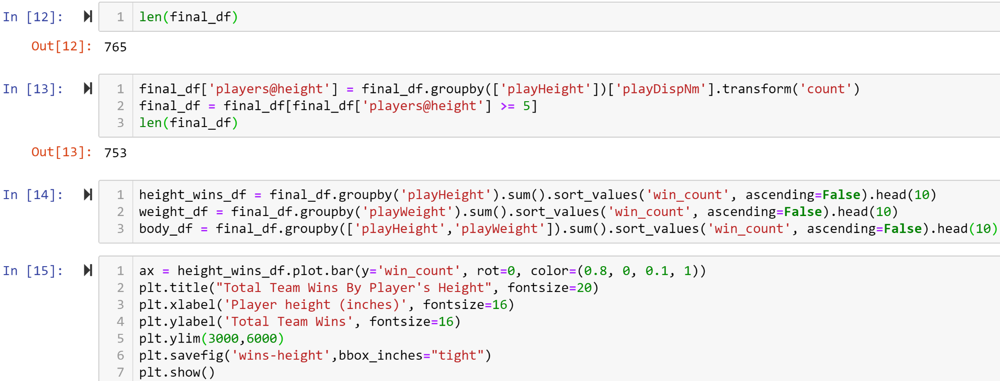
      <p>
        Cell-12 checks how many rows there are in final_df.  Each row is a unique player with the averages from a 
        total of six seasons worth of stats.  We take two steps in cell-13, first we add a column named players@height.
        All player's height are listed in an exact number of inches, so many players will be listed at the same height.  
        For each player, the players@height column will be filled with the number of players that are the same height as 
        them (<span>Each player themselves is also included in the count</span>). We are adding this column to further 
        clean our data even further to create our analysis more reliable.  We want to make sure that each listed height 
        has several players at that listed height so indivudla players can't drastically shift our results.  We then 
        remove rows where the value of the players@height column is less than five if there are five players at a 
        given height then we can consider it a reasonable sample size. Checking the new lenght of final_df we can see 
        that we removed 12 players from our data frame.  Two of which were undersized fan favorites Isaiah Thomas and 
        Nate Robinson who are both exceptions  to the generic prerequisites to be an NBA player.
      </p>
      <p>
        Cell-14 sets three new variations of final_df so that we can chart the top ten results when the list is sorted 
        by different columns.  Cell-15 charts the top ten listed heights that resulted in the most team wins.  Cells 
        16 and 17 then chart the the number of wins based on a player's weight, and then a combination of height and 
        weight. <span>The 2nd and 3rd graph mya not be as accurate as the first because we did not clean the data 
        in the weight column so one or two players could have too large a significance on our results</span>.  All 
        three graphs are seen below.
      </p>
    </div>

    <div class="graphs">
      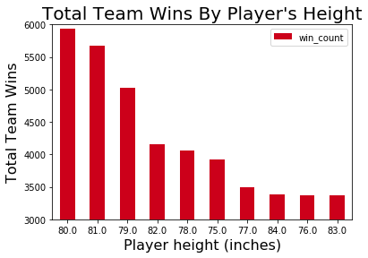
      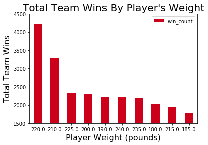
      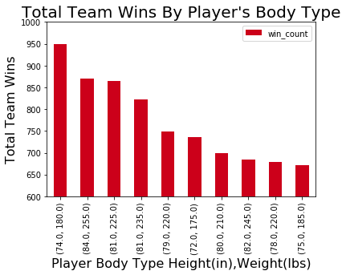
    </div>

    <div class="counts">
      <p>To the right is a list of how many players were listed at each height.  This list alone is strong indicator 
        of the state of the NBA.  The most common height in our list is 6ft 9in!  And 6ft 6in is the lowest height 
        of the five most common.  There definitetly were fewer players around and under 6ft.
      </p>
      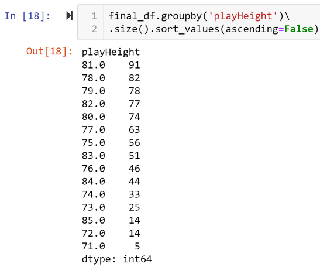
    </div>
    
    <div class="stats">
      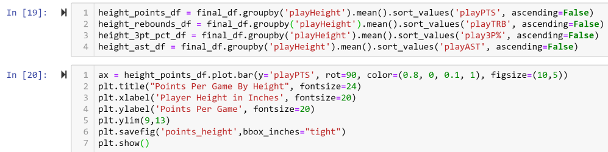
      <p>
        In cell-19 we set four new variables to see how a player's height compares two four other NBA stats.  We'll 
        check points, assists, rebounds, and 3-Point Fieldgoal Percentage.  Cell-20 show the code to create the graph 
        comparing a player's height to how many points they score per game.  All four graphs can be seen below.
      </p>
      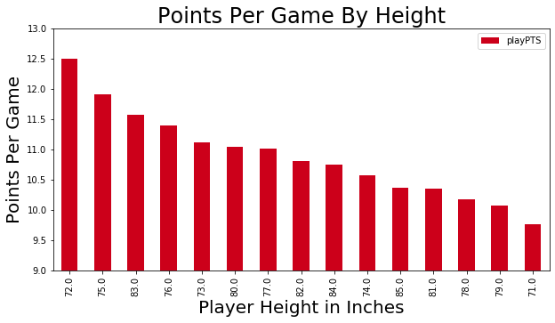
      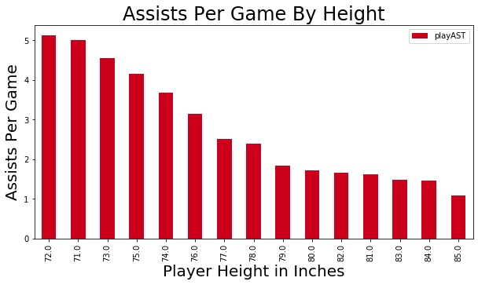
      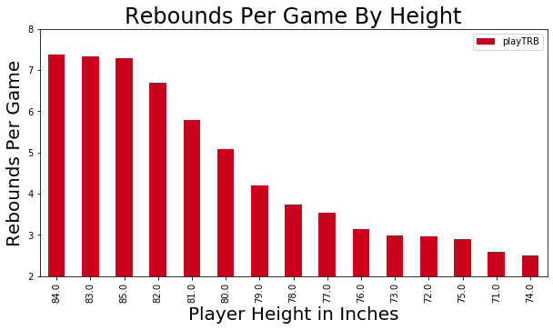
      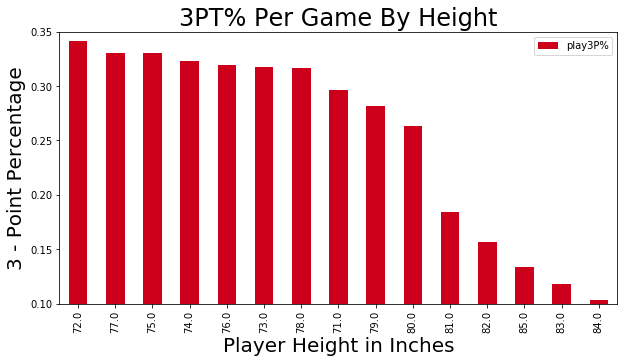
    </div>

    <div class="navigate">
        <a [routerLink]="['/foster']">PREVIOUS PAGE</a>
      <a [routerLink]="['/per']">NEXT PAGE</a>
    </div>
  </div>
</div>

